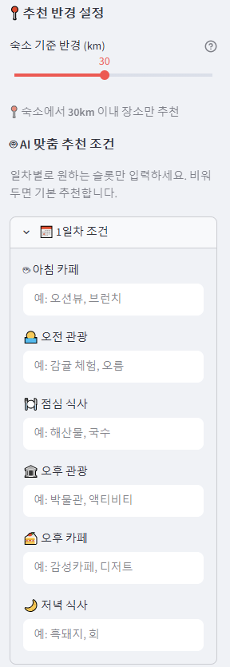
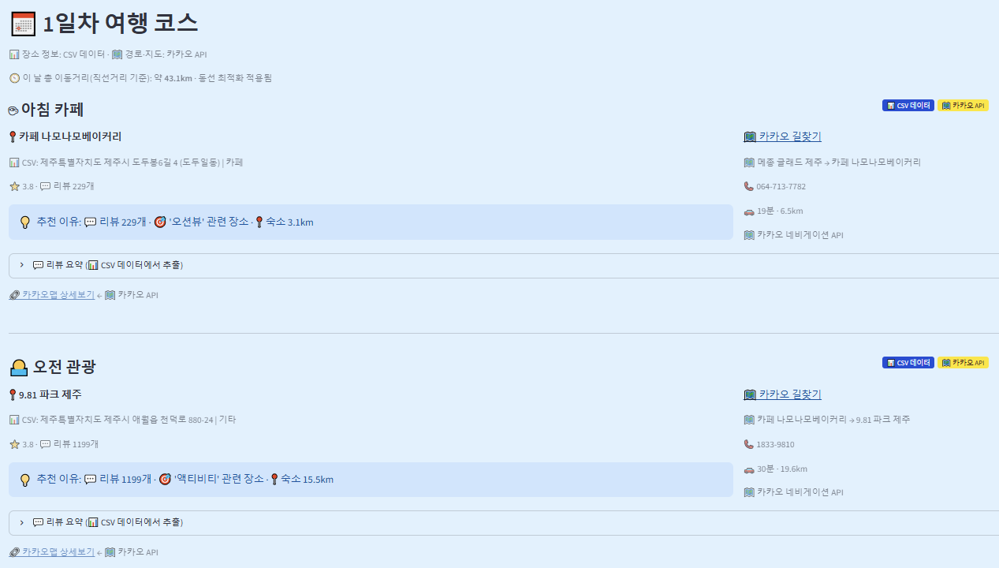
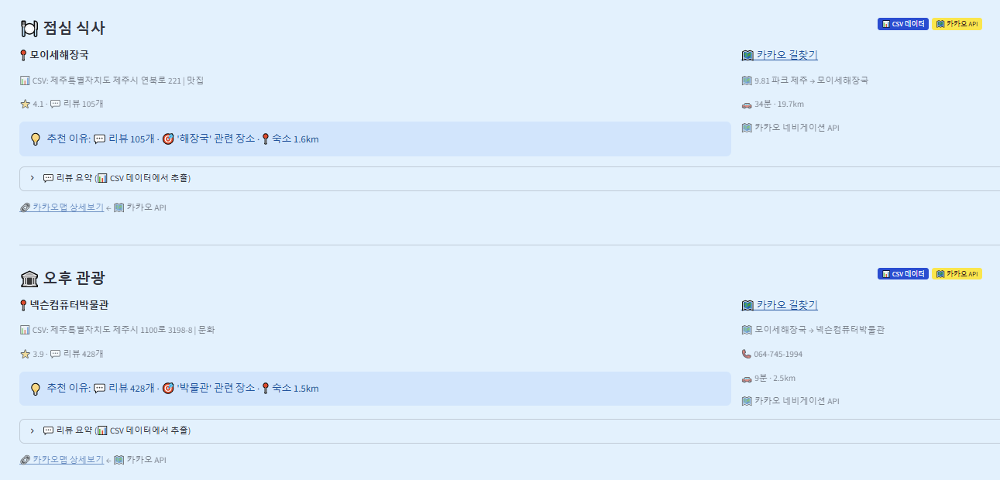
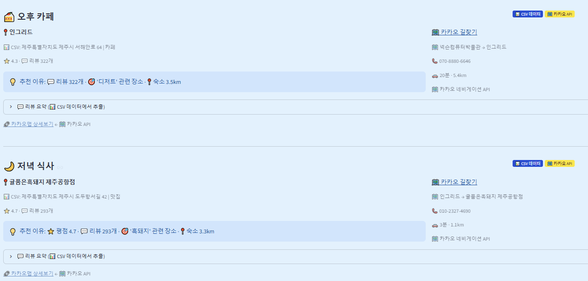
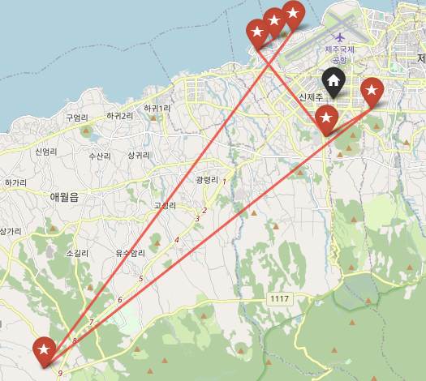
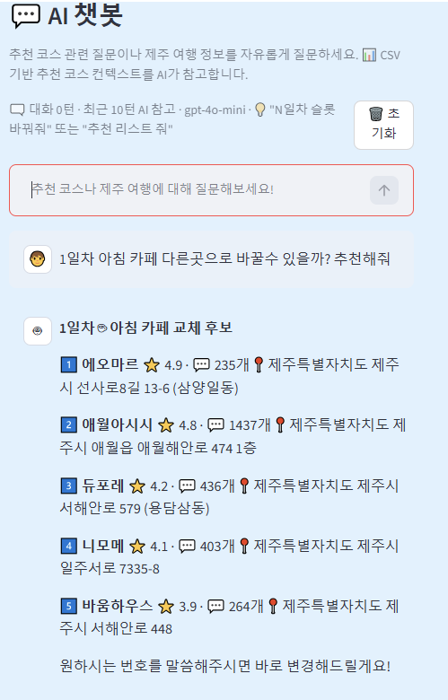

Overview어떤 문제를 풀었나
제주 여행을 계획 중이지만 일정 구성이 번거로운 사람, 혹은 특정 취향에 맞는 코스를 원하는 사람을 위한 서비스입니다.
제주 여행을 준비할 때 관광지를 하나하나 검색해서 일정을 짜야 하는 과정이 반복적이고 시간이 많이 든다는
불편함에서 기획이 시작됐습니다.
Preview실제 화면

추천 조건 설정 — 숙소 기준 반경, 일차별 슬롯 취향 키워드 입력



코스 생성 결과 — 장소별 추천 이유, 리뷰 수, 이동거리·경로까지 표시

동선 지도 시각화 — 숙소 출발부터 복귀까지의 경로를 Folium 지도로 표시

AI 챗봇 — 자연어로 코스 일부를 실시간 교체
Features핵심 기능
- 여행 기간 · 카테고리 기반 일정별 코스 자동 생성
- 슬롯별 취향 키워드 입력 → CSV 리뷰 매칭 + Chroma 유사도 기반 추천
- 실제 CSV 리뷰·장소명에 매칭되는 곳만 후보로 남기는 하드 필터로, 존재하지 않는 장소나 특징을 지어내지 않도록 방지
- 추천 근거를 투명하게 표시해 왜 이 장소가 추천됐는지 확인 가능
- AI 챗봇을 통한 실시간 코스 교체 및 후보 리스트 제시
- 숙소 출발 → 일정 → 복귀까지 총 이동거리가 최소가 되는 조합을 완전탐색으로 선택해 Folium 지도로 시각화
- 카카오 API로 실시간 숙소 검색, 경로·소요시간 계산, 지도 링크 제공
StackTech Stack
PythonStreamlitOpenAI API
Chroma DBLangChainKakao REST API
FoliumPandasSelenium한국관광콘텐츠랩 APIpytest
Results결과 & 성과
- 4인 팀에서 기획·데이터 수집·UI·배포까지 폭넓게 참여해 3주 만에 서비스 완성
- 한국관광콘텐츠랩 API와 카카오맵 크롤링으로 제주 관광지 1,054곳, 리뷰 18,845개 데이터베이스 구축, Streamlit 기반 UI 직접 구성
- pytest 기반 테스트 코드를 작성해 핵심 로직 검증
- API 호출을 병렬 처리로 개선해 추천 응답 속도를 20초에서 8초로 단축
Retrospective회고
데이터 분석 첫 프로젝트라 크롤링 과정에서 어려움이 많았는데, 팀원들과 협업하며 하나씩 해결해나갔습니다. 크롤링부터 서비스 완성까지 전 과정을 경험할 수 있었습니다.
한국관광콘텐츠랩 API에 제주의 모든 관광지가 등록되어 있는 건 아니라서, 실제로 다루지 못한 장소들이 있었다는 아쉬움이 남습니다. 리뷰도 장소당 최대 20개까지만 수집해서, 더 확보했다면 추천 정확도를 높일 수 있었을 것 같습니다.
추천 생성 시 API 호출이 누적되면서 속도가 느려지는 문제가 있었는데, 병렬 처리로 개선해 응답 속도를 20초에서 8초로 단축했습니다.
시행착오도 많았지만, 기획부터 배포까지 하나의 서비스를 온전히 완성해본 경험이었습니다.